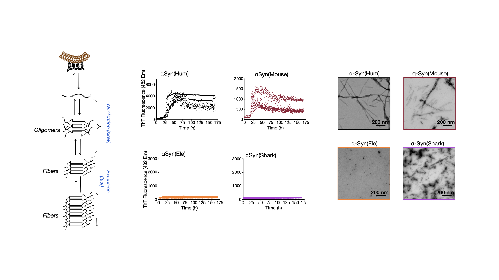
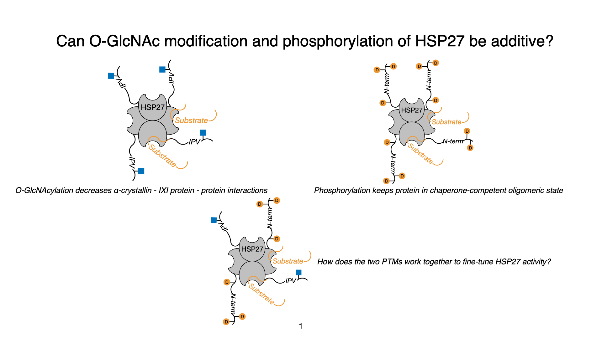
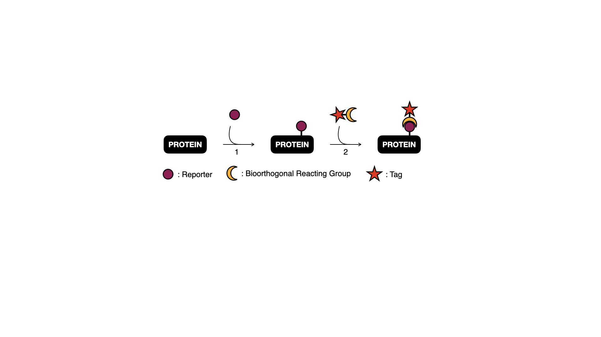

Research
Building precise chemical tools to ask sharper biological questions.
I combine synthesis, recombinant protein chemistry, biophysical analysis, and cellular assays to understand how proteins are regulated—and how that regulation changes in disease.

01 / Protein aggregation
What can long-lived animals teach us about α-synuclein?
α-Synuclein aggregation is central to Parkinson’s disease, yet the protein is conserved across vertebrates with dramatically different lifespans. I expressed and purified α-synuclein from eight animal species and compared their aggregation kinetics, fibril morphology, sedimentation behavior, and protease susceptibility.
This comparative approach revealed that sequences from long-lived species generally display diminished aggregation relative to shorter-lived species, including humans—suggesting that evolutionary lifespan may encode useful molecular insights into proteostasis.

02 / PTM crosstalk
How do multiple modifications reshape HSP27 function?
Post-translational modifications rarely act in isolation. I use solid-phase peptide synthesis, recombinant expression, and protein semisynthesis to build homogeneous HSP27 proteoforms carrying site-specific O-GlcNAcylation and phosphorylation.
By comparing the structure and chaperone activity of these defined proteins, this work examines how modification crosstalk regulates HSP27—and why the functional outcome can depend on the client protein being protected.

03 / Chemical tool development
Separating biological labeling from chemical artifacts
Metabolic chemical reporters enable the visualization and enrichment of glycans in cells, but nonenzymatic reactions can complicate interpretation. I synthesized and validated small-molecule probes for labeling O-GlcNAc-modified proteins and developed a mammalian cell-based assay to distinguish enzymatic incorporation from chemical S-glycosylation.
The goal is a more rigorous framework for assessing reporter specificity before these tools are applied to complex biological questions.